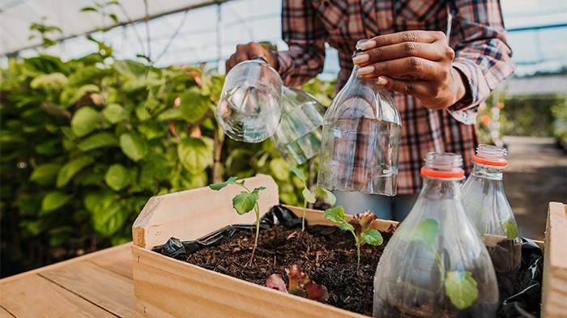
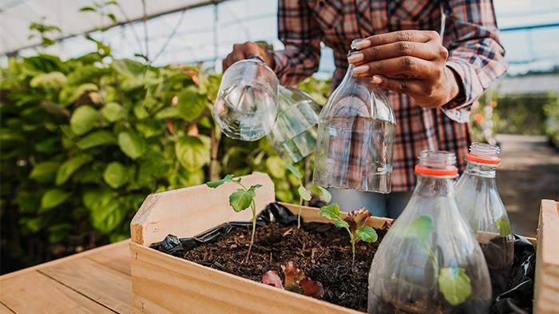

*Agricultura moderna
Agricultura intensiva e agricultura moderna são termos quase usados como sinônimos. Afinal, ambos surgiram no século XX para atender à crescente demanda mundial por alimentos.
Com auxílio de maquinário, defensivos, insumos e outras tecnologias, os agricultores finalmente conseguiram aumentar a produção e a rentabilidade da lavoura, potencializando o resultado obtido em cada metro quadrado da propriedade.
As produções agrícolas desse tipo são feitas em grande escala por agricultores que têm propriedades maiores. Além disso, esse modelo permite o alcance de melhores resultados em relação à produtividade das culturas do local.

.jpeg)
.jpeg)
.jpeg)

*Agricultura tradicional
A agricultura tradicional, também conhecida como agricultura de subsistência, foi o principal formato de cultivo de plantas ao longo da história.
O modelo ainda é bastante comum em pequenas propriedades, que costumam atender ao consumo próprio das famílias ou da comunidade local.
Esse modelo tem como uma de suas características a baixa produtividade e, consequentemente, menor lucro para os produtores.
Isso significa que a comercialização dos produtos obtidos pela agricultura tradicional não acontece em grande escala.
.jpeg)
.jpeg)
.jpeg)
.jpeg)
.jpeg)
*Agricultura familiar
A agricultura familiar, assim como o nome diz, é um sistema de produção agrícola desenvolvido por famílias em pequenas propriedades rurais. Além de ter como objetivo a subsistência dessas pessoas, esse modelo também é utilizado para abastecimento do mercado interno de alimentos no Brasil.
De acordo com dados do Censo Agropecuário, realizado pelo IBGE (Instituto Brasileiro de Geografia e Estatística), aproximadamente 77% das propriedades agrícolas utilizam esse sistema de agricultura.
A atividade tem grande importância para o país, por isso conta com políticas públicas e incentivos de programas governamentais, com o objetivo de contribuir para o desenvolvimento desse modelo de agricultura.
.jpeg)
.jpeg)
.jpeg)
.jpeg)
.jpeg)
*Agricultura patronal ou empresarial
Na agricultura patronal ou empresarial, o foco da produção é o consumo do mercado interno e a exportação.
Existe um alto investimento na gestão da lavoura, contratação de profissionais qualificados e uso de insumos, manejos e tecnologias que contribuam para a rentabilidade do negócio.
Assim, é possível aumentar a produtividade do campo. Esse modelo é utilizado em médias e grandes propriedades e que possuem um grande potencial produtivo.
.jpeg)
.jpeg)
.jpeg)

*Agricultura orgânica
A agricultura orgânica está baseada na produção com uso menor de defensivos e fertilizantes, utilizando insumos de origem natural.
Nesse modelo agrícola, costumam ser usadas tecnologias apropriadas à realidade local de solo, topografia, clima, água e biodiversidade, preservando a harmonia de todos esses elementos entre si e com os seres humanos.
Vale destacar que a agricultura orgânica tem a mesma base ecológica da agricultura natural e agroecológica, por exemplo. No entanto, elas usam técnicas e conhecimentos distintos.
.jpeg)

.jpeg)
*Agricultura sustentável
Esse tipo de agricultura corresponde a produções alternativas para preservar o meio ambiente e gerar um impacto negativo mínimo. Contudo, não deixa de ser um tipo de produção agrícola voltado para a comercialização e obtenção de lucro. A agricultura sustentável desenvolve ações como a diminuição do uso de adubos e fertilizantes, captação e reúso da água e o não uso de pesticidas. Esse tipo de agricultura investe em qualificação da mão de obra.
 
